Ayagawa, Kagawa: things to do, food and stays
Ayagawa · Kagawa
Ayagawa
Highlighted on the Kagawa map.

Stay
ＡＳＫＩＡ

ASKIA
閑雲庵
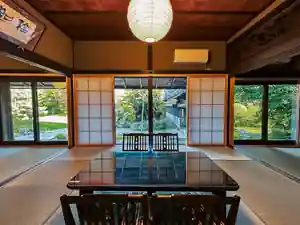
Kan'Un Iori
Inn in Hatada, Ayagawa with a renovated traditional house.
マウンテンドーム
Mauntendomu
Dining
本格手打うどん はゆか

Honkaku Teuchi Udon Hayuka
山越うどん
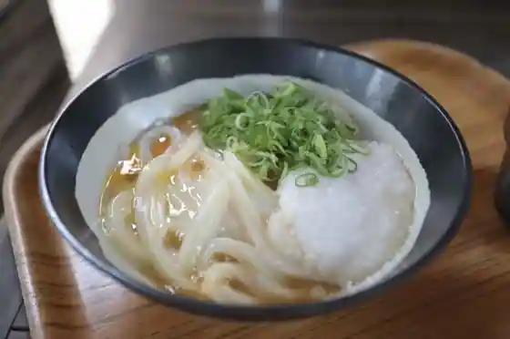
Yamakoshi Udon
手打うどん たむら
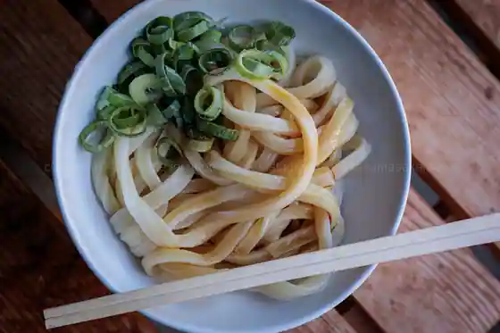
Teuchi Udon Tamura
いなもく
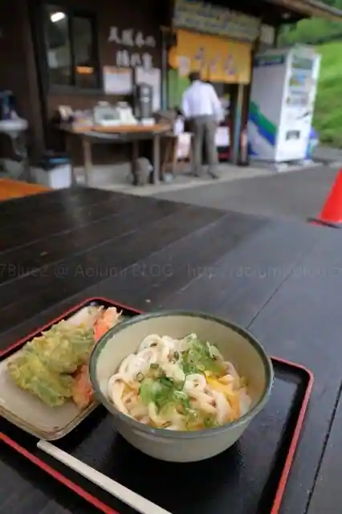
Inamoku
岡製麺所
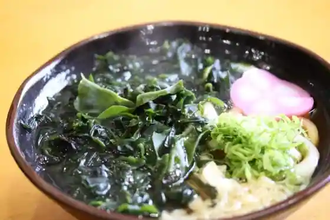
Oka Seimen Tokoro
池内うどん店
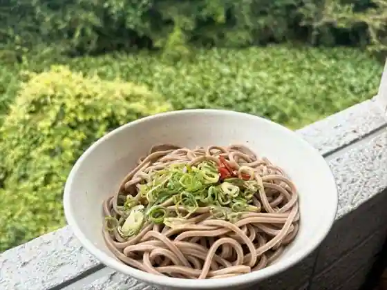
Ikeuchi Udon
さぬきうどんの駅 綾川
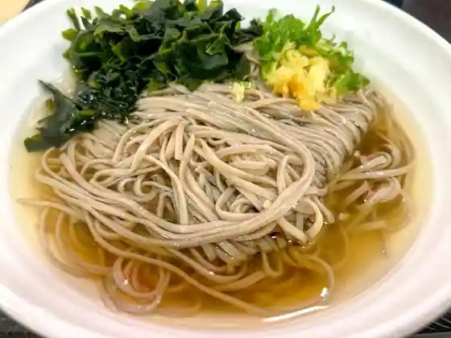
Sanukiudonno Eki Ayakawa
讃岐めん工房 空音
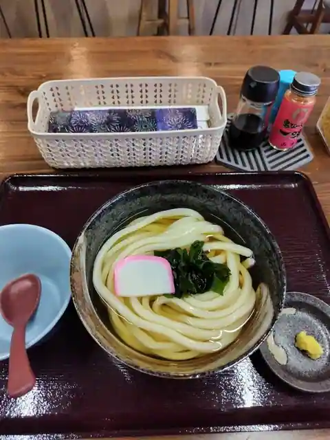
Sanuki Men Kobo Sorane
飩餃
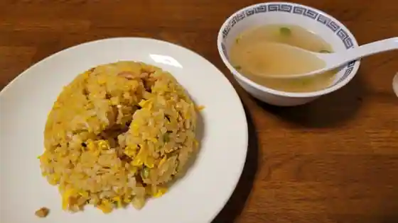
Ton Ko
道の駅 滝宮
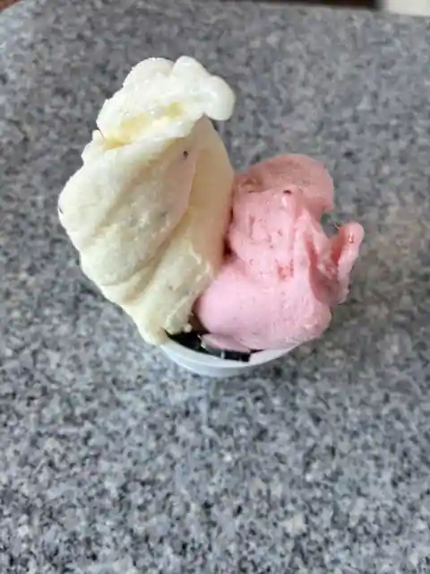
Michi No Eki Tatsunomiya
香川屋本店 綾川店
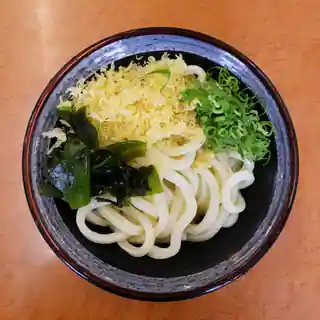
Kagawa Ya Hon Ayakawa
やまだうどん
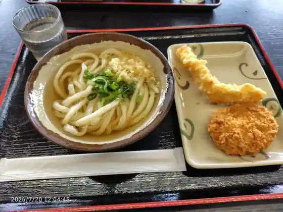
Yamadaudon
PIZZERIA AL CENTRO
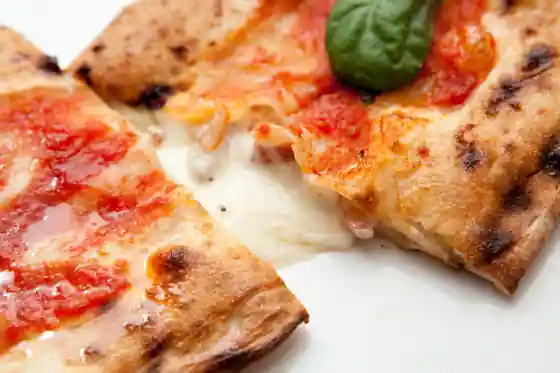
PIZZERIA AL CENTRO
うふ、いちご。
Ufu, Ichigo.
家食屋 ほんてん
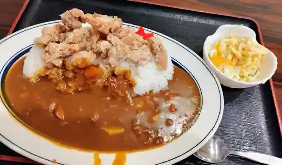
Ie Shoku Ya Honten
Re:ボンジュール
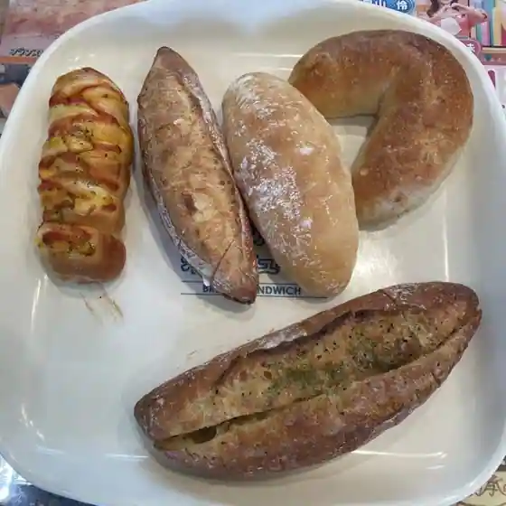
Re: Bonjuru
玉吉 本店
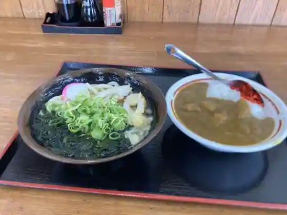
Tamakichi Hon
丸善
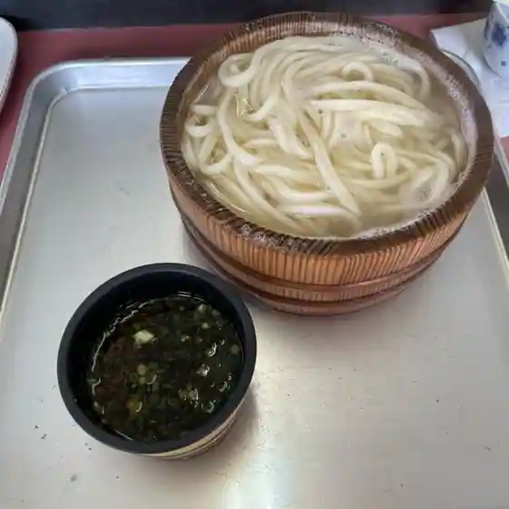
Maruzen
カフェレストラン ガリーン
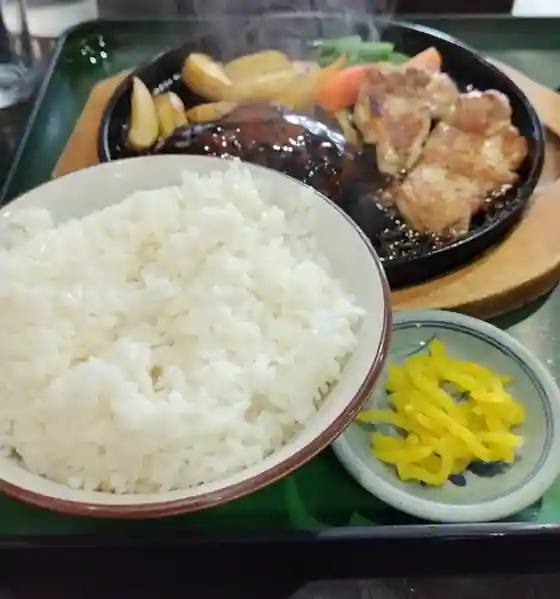
Cafe Restaurant Garin
安藤うどん
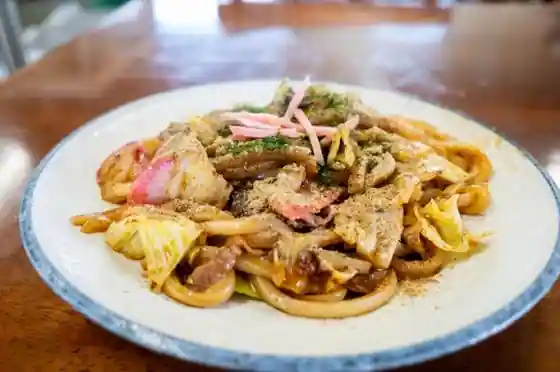
Ando Udon
炭焼工房 心
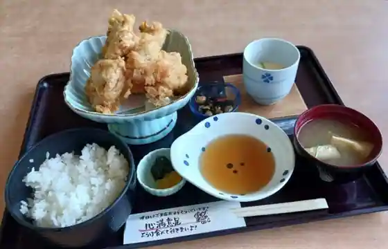
Sumiyaki Kobo Kokoro
たかはた
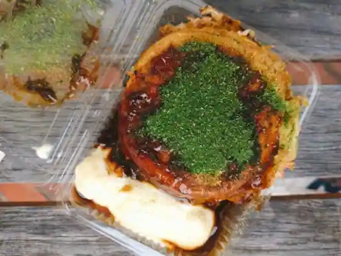
Takahata
Cafe Rob 香川店
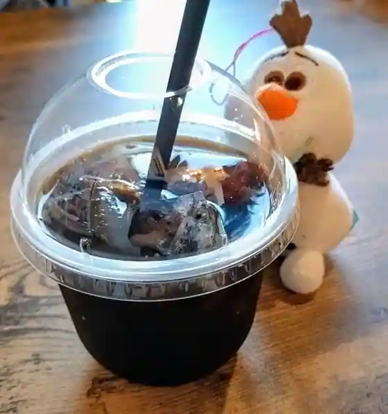
Cafe Rob Kagawa
えび豚骨拉麺 春樹 イオンモール綾川店
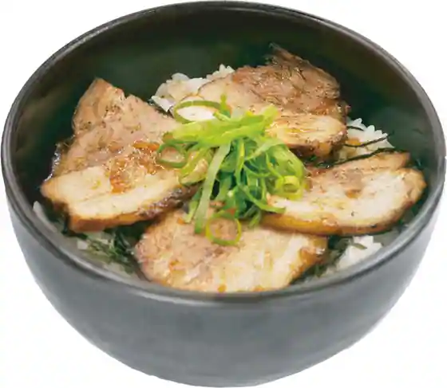
Ebi Tonkotsu Ramen Haruki Ionmoru Ayakawa
Sights
Tatsunomiya Tenmangu Shrine
Taki Miya Shrine

Taka Hachiyama

Tsutsumayama (Hayuka Fuji)

Bodai In

Konpira Toro (Tatsunomiya)